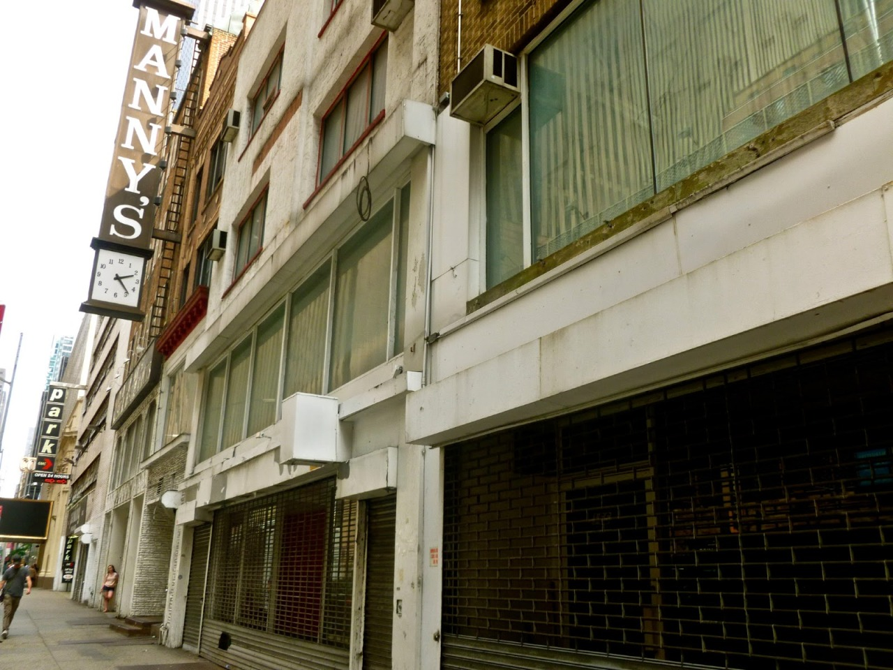

I don’t know why I’m nostalgic about 48th Street. I mean, I know why – it was home to the best guitar stores in the world – but they were staffed by the biggest assholes who couldn’t be bothered to sell you something because after all who the fuck are you? You’re no Keith Richards; move along son. Still, there was nothing cooler than wandering through Manny’s and trying out guitars and amps, playing shitty renditions of songs and annoying the hell out of those asshole salesmen…